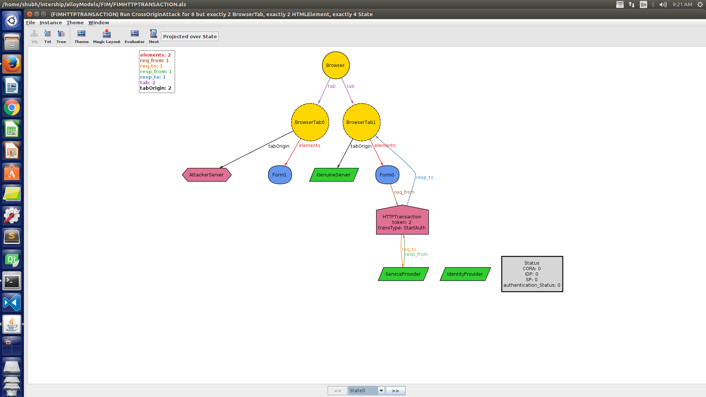
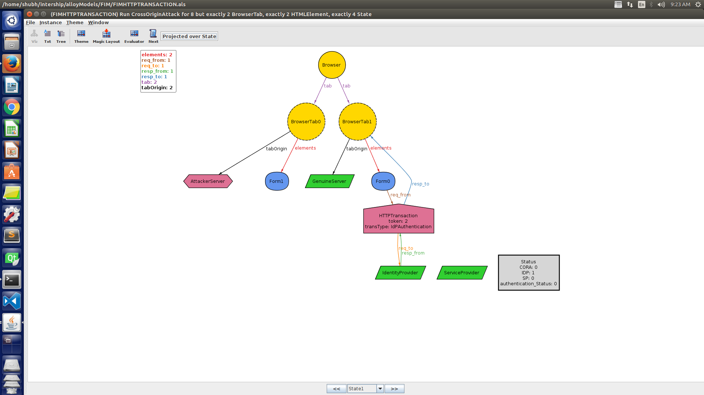
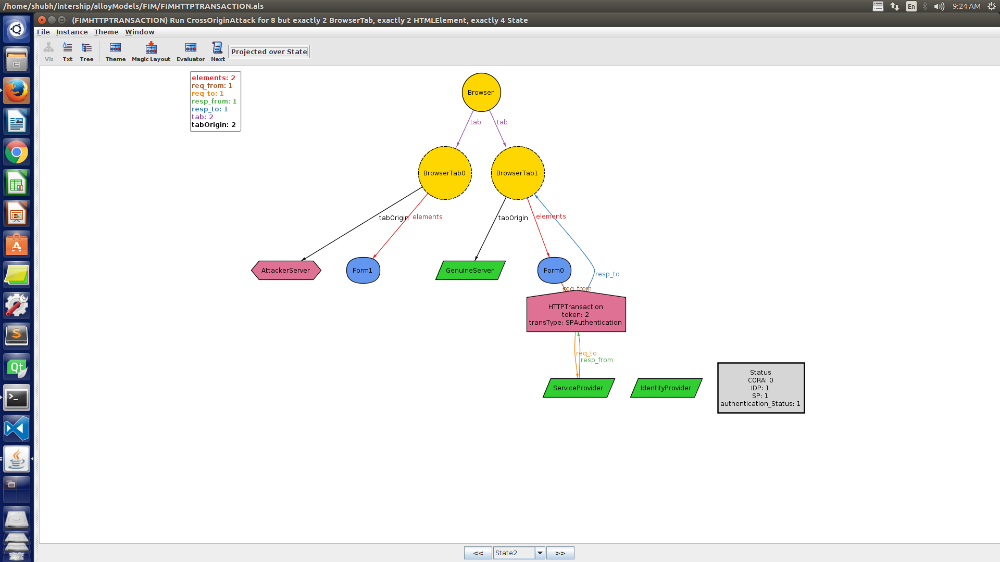
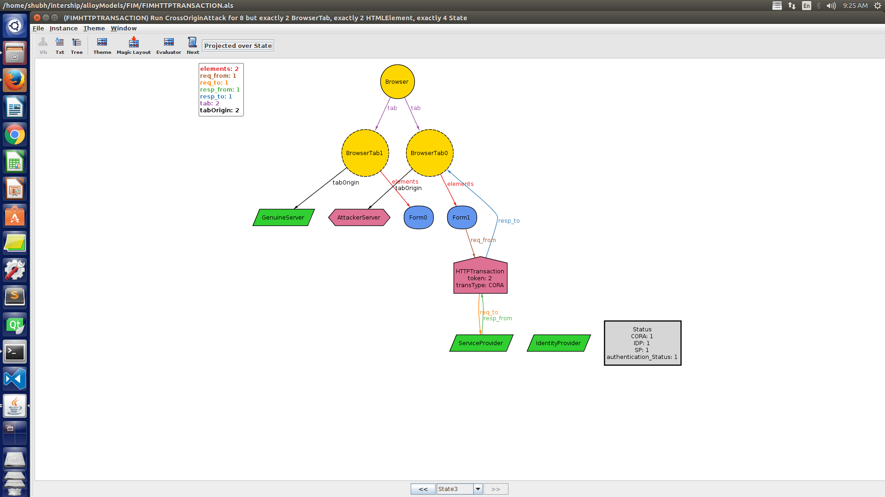
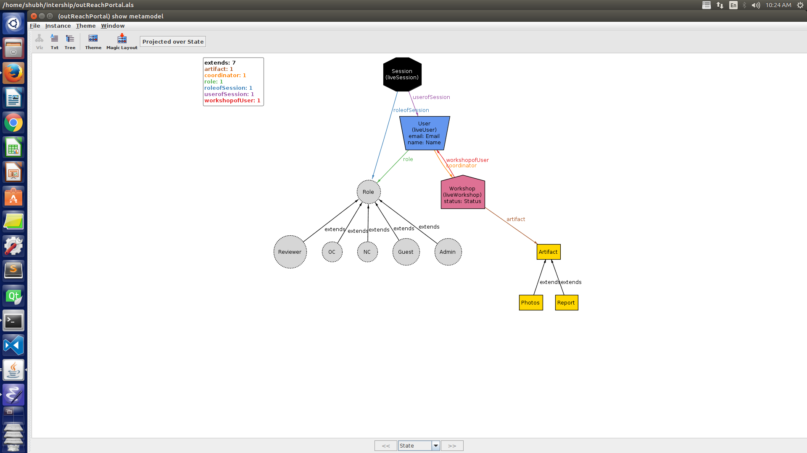

Data-Model
Table of Contents
1 Aim
To make better data models for various VLEAD projects using Alloy
2 Process of building
- To understand various methods of building data-models
- To properly implement the requirements of the client
- To find various bugs in models which can harm the application after deployment
- Using Finite State Machine to make data models
3 W1eb App Short Course
4 Web Security
This week we worked on OAuth authentication process are trying to find Vulnerability in it.
4.1 OAuth
4.1.1 Introduction
1.OAuth is a 3 step process where we have a browser intracting with a service provider(eg.Quora) and an identity provider(eg. Facebook) 2.The intractions are using HTTP Transaction and a Token which is passed on in each step
4.1.2 Sending request to the Service
1.In this step the browser sends an HTTP Request to start the authentication and send the token which will then be passed to the identity provider.

4.1.3 Authentication by the Identity Provider
1.Now the idenity provider checks the token. 2.Approves the User and gives the response to the browser. 3.Hence in status IDP changes from 0 to 1 
4.1.4 Approval by the service provider
1.The browser uses the token as authentication key and logs in to the service provider 2.Hence the SP status changes to 1 and the user is authenticated. 3.User Authentication status changes from 0 to 1 
4.2 Cross Origin Attack
1.We have also modelled a simple cross origin request from the attacker tab 2.The tab uses the same token which was given by the service provider and makes a malicious request to the service provider

5 Outreach Portal
1.We have worked on making a basic model for the OutReach Portal. 2.It has a similar approach to the web-app-short-course.
